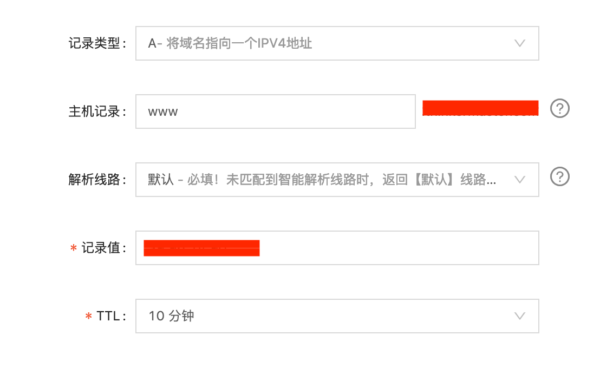
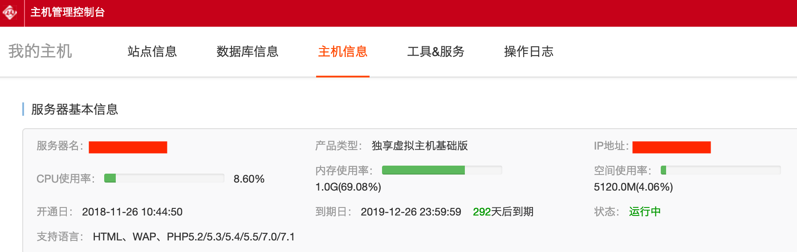
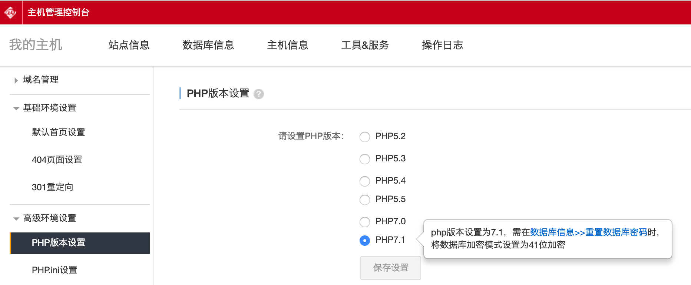

域名解析和域名绑定
域名解析
域名解析，其实就是把域名（比如www.baidu.com）和服务器进行关联，当在浏览器输入www.baidu.com的时候，域名解析系统DNS会把这个域名转成成IP地址找到某个主机上的某个服务。域名解析是由域名解析系统完成的，我们所要做的只不过是把域名设置到对应的主机上。
购买完域名后需要先实名认证才能进行域名解析。服务器提供商（比如阿里云）都会提供实名认证的域名解析的功能。需要注意的是，域名所有者信息和域名实名认证以及网站备案的主体这三个要求是一样的才可以，即同一个人或同一个企业。
域名解析有很多种，比较常用的是A记录解析和CNAME解析，A记录解析是将域名指向一个IPV4地址，CNAME解析是将域名指向另外一个域名。新域名解析基本上使用A记录解析。这里是阿里云资料：https://help.aliyun.com/knowledge_detail/50986.html?spm=cp-aliyun-com.10698423.0.0.665572313nppBw
操作方法：
进入阿里云控制台 -> 域名 -> 点击购买的域名后“解析”
- 记录类型：选择A，即将域名指向一个IPV4地址
- 主机记录：主机记录录是二级域名，一个主域名可以添加多个二级域名分别指向不同的网站服务器。比如：www.baidu.com mail.baidu.com image.baidu.com ... 这里的www, mail, image都是二级域名
- 记录值：A记录解析的记录值是IP地址，这个IP地址由服务器提供商提供。即要正确填写此信息之前需要先购买主机，购买完主机后这个IP地址就有了，在https://cp.aliyun.com主机管理控制台中的主机信息里可以看到IP地址。主机管理控制台中要设置一些信息，比如数据库名称，密码，用户名，密码等等。下面的IP地址即是要填写的记录值
域名解析一般需要解析2组，一个带WWW的，一个不带WWW，不带WWW的用@表示
域名解析需要等待几分钟到几个小时，检测域名解析是否成功的方法很简单：直接在浏览器中输入域名，看是否能打开对应的服务器内容。刚开始进行域名解析可能还没有备案，这时候可以在主机管理控制台中找到临时域名进行测试，备案成功前也可以通过此临时域名做网站，但临时域名访问需要输入FTP密码才可进入，这个密码也是在主机控制面板中设置的。
域名绑定
域名解析是对域名进行的操作，是让域名指向哪一台主机用的。
而域名绑定是主机上接受域名的装置。即告诉主机允许哪些域名的指向, 只有通过域名绑定添加了域名才可以通过域名访问到这个主机，即域名解析和域名绑定这两步操作缺一不可。
操作方法：
在主机管理控制台的域名管理->域名绑定中，点击"+绑定域名"，这里填写示例：
www.xxx.come
xxx.com
临时域名.com
域名解析和域名绑定中间有个中断，这个中断就是网站备案。备案通过后这条线才通。期间可以通过临时域名访问主机上的网站内容，但需要输入FTP密码。网站备案之前可以通过这个临时域名搭建网站，一个主机可以绑定多个域名，但是这些域名访问的都是同一个网站。
在主机管理控制台的高级环境设置里有一项是PHP版本设置，建议设置成高版本，PHP版本>=7.0后，需要按提示设置数据库加密模式为41位加密：